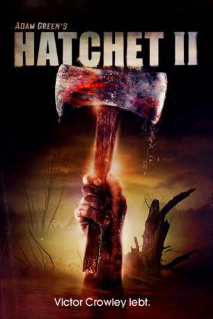
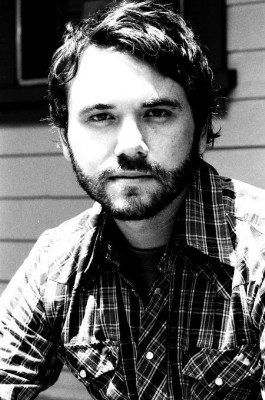
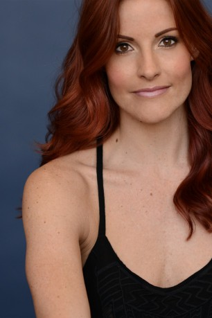
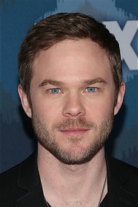
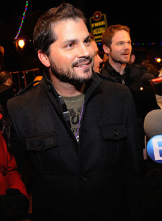

#7566 Hatchet 2
 
 IMDB-Wertung: 5.5 / 10
IMDB-Wertung: 5.5 / 10  Metascore: 0
Metascore: 0 
Marybeth war die Einzige aus ihrer Clique, die bei einer Serienkiller-Touristentour durch die Sümpfe Louisianas der Axt des grauenhaften Schlächters Victor Crowley entkommen konnte. Als sie erfährt, dass es eine unmittelbare Verbindung zwischen Crowley und ihrer Familie gibt, beschließt sie, dem enthemmten Killer den Krieg zu erklären. Sie versammelt eine Gruppe bestens instruierter Jäger um sich und kehrt zurück in die Sümpfe: Dort will sie die Leichen ihrer Familienmitglieder bergen und Crowley seine eigene Medizin verpassen.
Jahr: 2010
Dauer: 85 Minuten
FSK: 18
Land: USA Studio: Dark Sky FilmsTonspuren:
Untertitel:
Auflösung: 720p (1280x720) Größe: 3348 MB
Genre: Thriller, Horror, Komödie
Regisseur: Adam Green
Drehbuch: Adam Green
Soundtrack:
Darsteller:
 Danielle Harris als Marybeth Dunstan
Danielle Harris als Marybeth Dunstan Tony Todd als Reverend Zombie
Tony Todd als Reverend Zombie Kane Hodder als Victor Crowley / Thomas Crowley
Kane Hodder als Victor Crowley / Thomas Crowley Parry Shen als Justin
Parry Shen als Justin Tom Holland als Bob
Tom Holland als Bob- R.A. Mihailoff als Trent
-  AJ Bowen als Layton
- Alexis Kendra als Avery
- Ed Ackerman als Cleatus
- David Foy als Chad
 Colton Dunn als Vernon
Colton Dunn als Vernon- Rick McCallum als John
 Kathryn Fiore als Shyann Crowley
Kathryn Fiore als Shyann Crowley- Erika Hamilton als Lena
- Mercedes McNab als Misty
- Joleigh Fioravanti als Jenna
-  Rileah Vanderbilt als Young Victor Crowley
- Sarah Agor als Brittany
-  Shawn Ashmore als Fisherman #1 , uncredited
- Steven Barton als Featured Hunter , uncredited
- Emma Bell als Parker O'Neil , uncredited
- Marcus Dunstan als Featured Hunter , uncredited
-  Adam Green als Puking Guy , uncredited
 Lloyd Kaufman als Featured Hunter , uncredited
Lloyd Kaufman als Featured Hunter , uncredited- Joe Lynch als Gator Hunter , uncredited
- BJ McDonnell als Hunter #1 , uncredited
- Mike Mendez als Featured Hunter , uncredited
 Joel Murray als Shapiro , uncredited
Joel Murray als Shapiro , uncredited Laura Ortiz als Andrea , uncredited
Laura Ortiz als Andrea , uncredited- Nick Principe als Hunter #2 , uncredited
- Ryan Schifrin als Featured Hunter , uncredited
- Cody Blue Snider als Young Sampson , uncredited
- John Carl Buechler als Jack Cracker
- Charlayne DeVillier als Cindy
- Jason Richard Miller als Fisherman #2 , uncredited
- Dave Parker als Featured Hunter , uncredited
- Blake Reigle als Hunter , uncredited
Datei: X:\FSK18-Collections\Hatchet\Hatchet 2 (2010, FSK18, 1280x720).mkv seit 21.11.2017
Festplatte: FSK18
 Es gibt insgesamt 7 Filme in der Gruppe 'FSK18-Collections\Hatchet'
Es gibt insgesamt 7 Filme in der Gruppe 'FSK18-Collections\Hatchet'